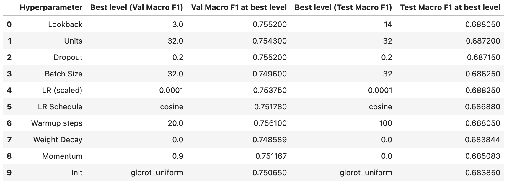
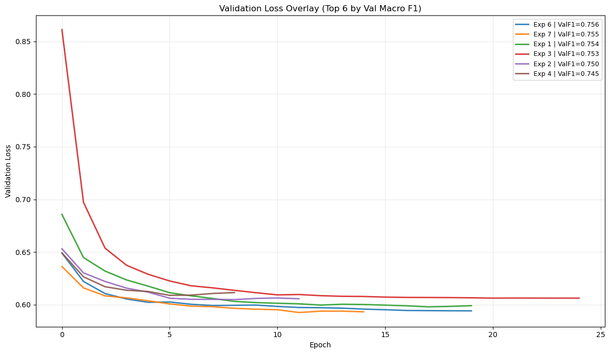
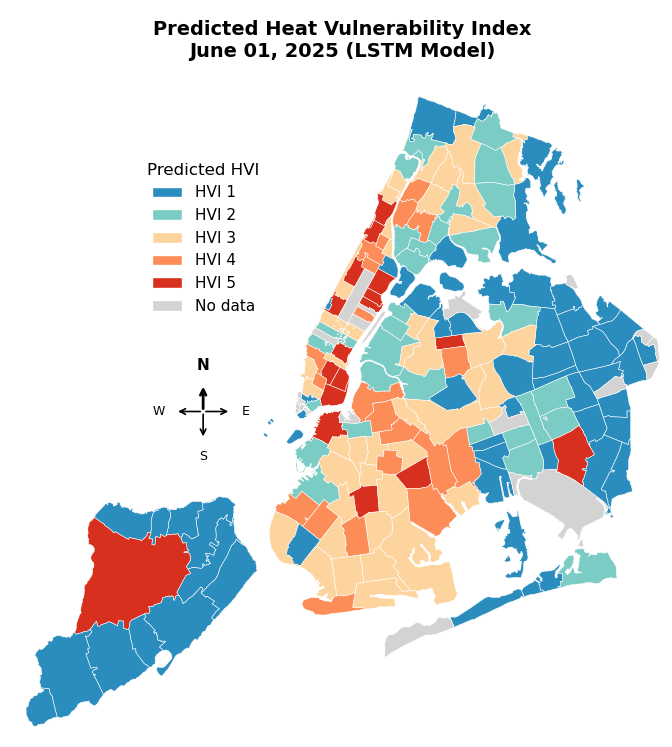
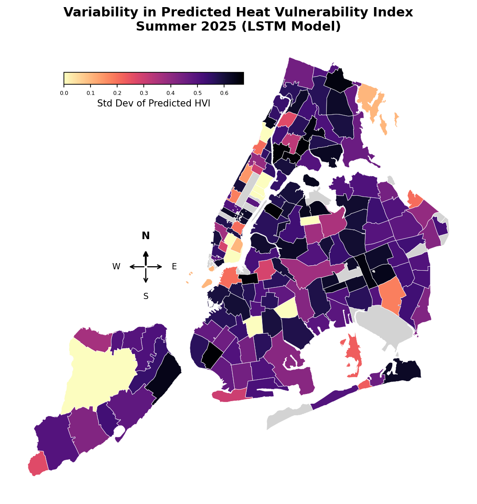
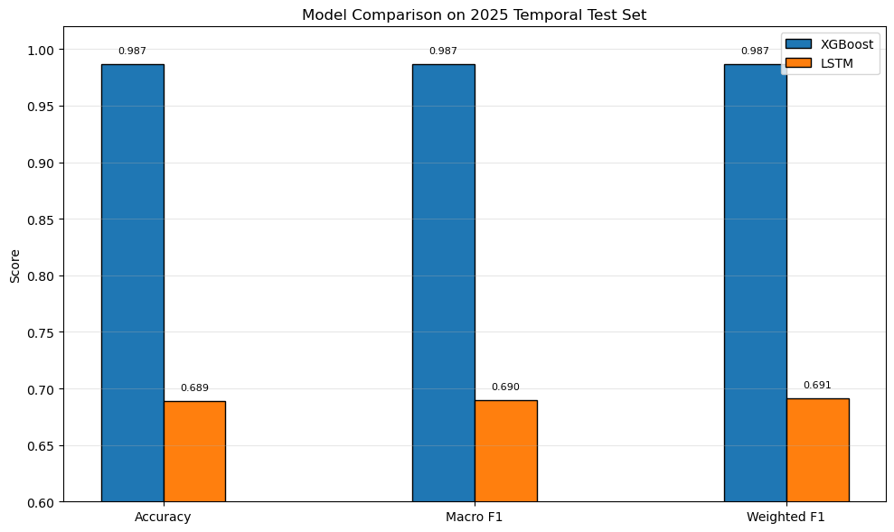
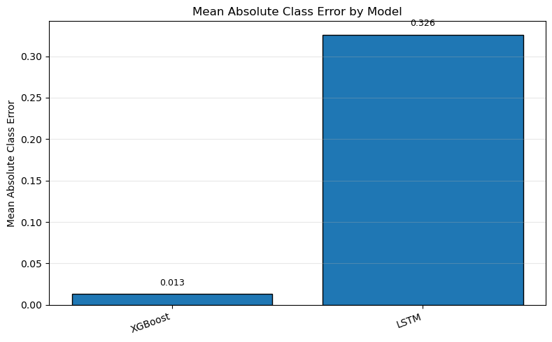
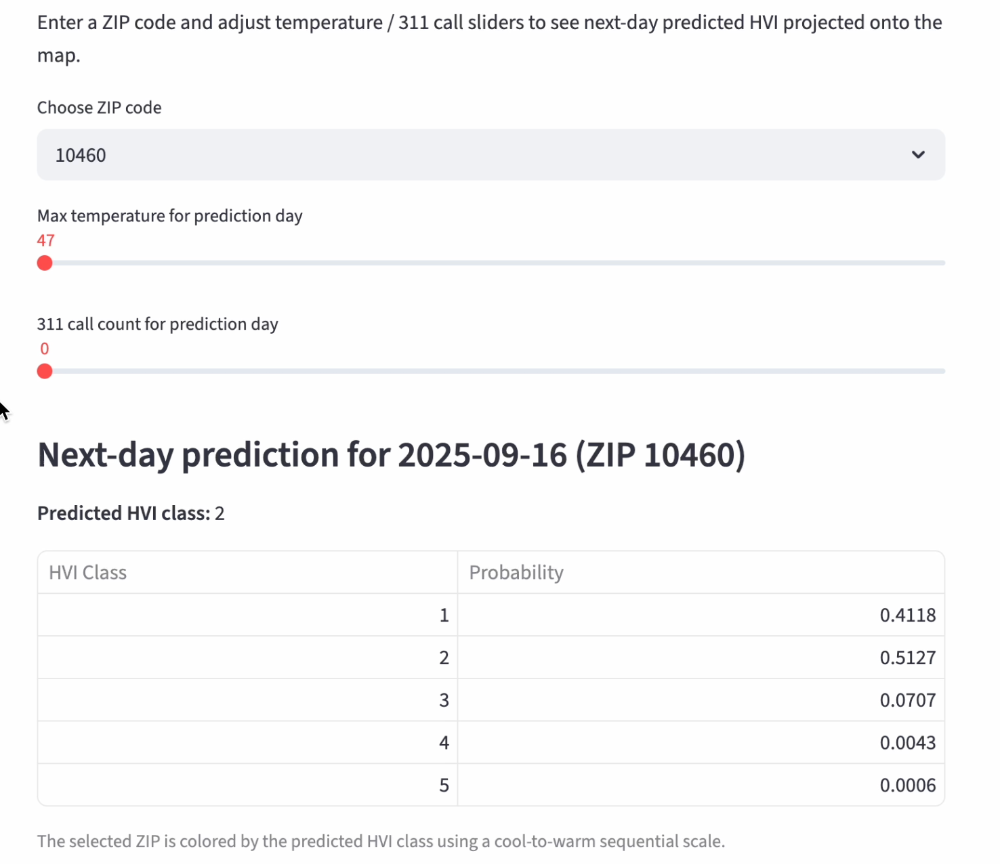
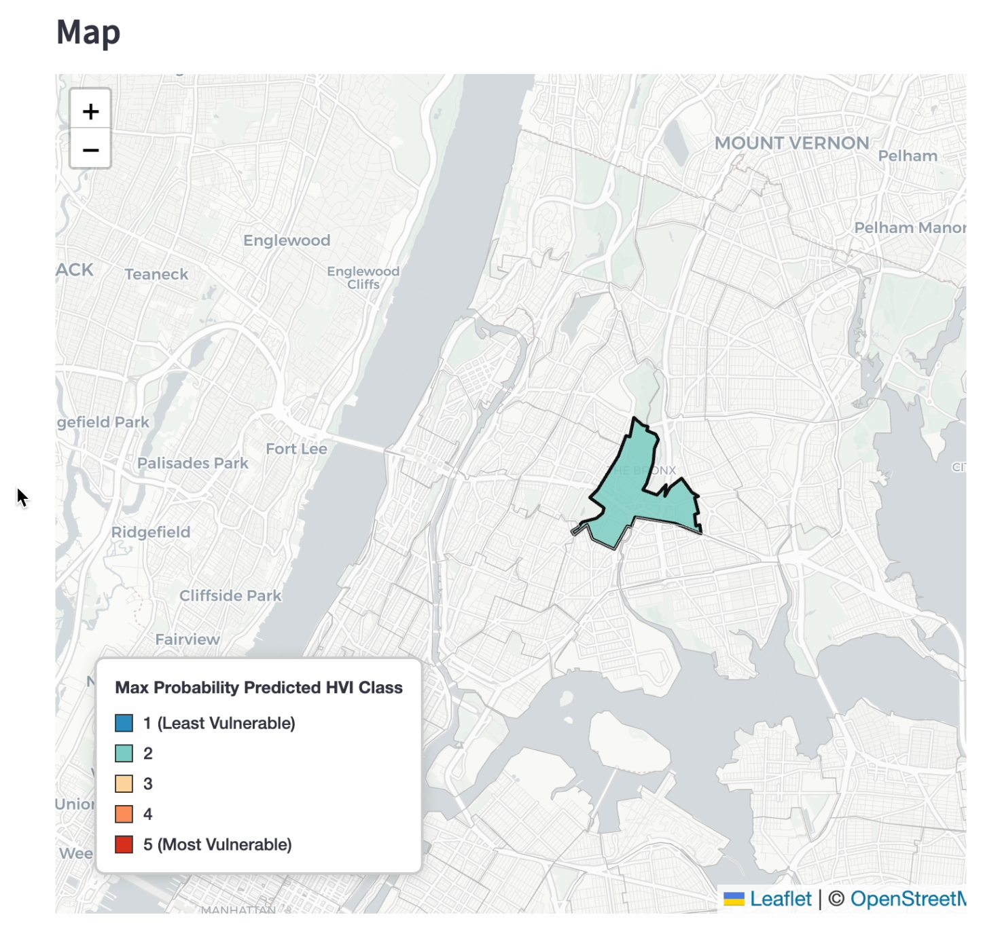

I. Introduction & Literature Review
1.1 Heat Exposure-Related Mortality
In the past decades, rising heat has developed into a nationwide concern in the United States. Global warming has contributed to average temperatures increasing across the country by about 60% since the 1970s. This worsening climate has severe public health implications with heat stress being the “leading cause of weather-related deaths” according to the World Health Organization. In the U.S. specifically, a recent study conducted by the Yale School of Public Health found that heat-exposure related deaths rose by over 50% in the past twenty years.
Large metropolitan areas are particularly susceptible to this trend because of the “heat island effect”. Scholars describe this phenomenon as the tendency of heat to accumulate in cities because of how manmade structures absorb warmth much more than natural surfaces do. Furthermore, many urban areas have insufficient green space because of the development necessary to support a large population. NYC faces this effect more acutely than anywhere else in the nation. Residents experience temperatures around 9.7 degrees hotter than otherwise, the largest “per capita temperature boost” in comparison to the 65 other cities analyzed in the survey. Such climate is extremely dangerous for New Yorkers at large, with, on average, more than 500 residents dying every summer as a result of the heat. Consequently, the city devotes considerable resources towards reducing the effects of the heat as much as they can. These include Cooling Centers, for example, which are air-conditioned public areas.
1.2 Environmental Justice & Heat Vulnerability Indices (HVI)
Crucially, not all of the areas of the city are affected equally by the heat. Some parts of the city have indexes up to 13 degrees Fahrenheit, while others experience less than 6 degrees Fahrenheit. Similarly, not every individual experiences the severity of the heat in the same way, with research finding low-income and non-white populations in NYC to be the most at-risk for heat-related health problems. Given this asymmetry, it follows that the locations where people are most vulnerable must be identified, so that government officials can allocate more resources during periods of strong heat. This is the role of the Heat Vulnerability Index (HVI), a statistical measure which identifies the neighborhoods within a city whose residents are most at risk of fatalities due to the heat.
HVIs are developed using a variety of factors. For example, an HVI developed for Philadelphia included factors such as surface temperature, ethnicity, income, and age, as reviewed by Hondula et al.. In Phoenix, an HVI reviewed by Winston Chow et al. used similar elements, but supplemented them with immigration status and vegetation levels. The geographical unit of analysis also varies between the different indices, whether it be counties, census tracts, or postal codes. NYC’s HVI was created by the city’s Department of Health and Mental Hygiene (DOHMH), and analyzes data on surface temperature, green space, home air conditioning, and income in order to determine the score of a particular ZIP code. A score of 1 represents the lowest vulnerability, while 5 represents the highest.
Since its inception, NYC has focused resources towards communities with high HVIs. For example, they have developed “Cool It! NYC,” a citywide plan to increase the amount of publicly available “cooling features” in these areas, including pools and showers. Researchers built upon this framework over the years, developing an “Enhanced Heat Vulnerability Index” which also included tree, park, and age data. Despite these improvements, a clear research gap remains: HVI is a static measure. Scholars agree that, while useful when data is from several years, the index considers vulnerability in hindsight rather than constructing a dynamic and predictive picture. It is within this lacuna that our project intervenes, using ML to transform the HVI from a fixed index into a living tool.
1.3 Technical Literature Review
In the past couple years, there have been significant advancements in the use of machine learning for climate-related analysis. Researchers Jigar Doshi et al., for example, have implemented CNNs in order to analyze satellite imagery from disaster zones and identify where rescue efforts should be targeted. Similarly, Seoyeong Ahn et al. gathered existing and simulated data to train a spatial model which forecasts the predicted health risk of PM2.5, a harmful atmospheric pollutant, in different areas of South Korea. It is no surprise, thus, that ML has been deemed a “powerful tool” for predicting climate risks through “computationally tractable” models.
Considering the specific area of climate-related impact that this paper will focus on, heat vulnerability, there have been notable studies conducted worldwide, establishing a clear history of the ideas we intend to explore. For example, Shan Jiang et al. employed logic regression to construct decision trees which identified “extreme heat exposure” as derived from simulated health-outcome data from Atlanta, Georgia. In “Use of machine learning tools to predict health risks from climate-sensitive extreme weather events: A scoping review,” Ssebyala et al. deconstructed several heat-related ML projects from the past decade, identifying some interesting patterns—namely, that none of them employed XGBoost or LSTMs in their experiments, as we intend to do.
Within this area, a couple of other studies merit consideration. For one, in 2025, Ermanno Zuccarini employed LSTM modeling to analyze the UHI effect in a small Italian town. The study trained a predictive model to simulate hourly forecasts, with the results deeming LSTMs as particularly useful in making research more “cost-effective”. Furthermore, Fatima Shafiq et al. performed a study comparing the efficacy of a wide array of deep learning models—including Artificial Neural Networks (ANNs), CNNs, and LSTMs—in predicting extreme heatwaves in Pakistan. Her team found that LSTMs in fact outperformed all other models, attaining an accuracy of 96.2%.
2. Research Questions & Hypotheses
This project investigates the following research question: Can an LSTM use recent ZIP-code-level behavioral and environmental signals to model heat vulnerability as a dynamic, time-sensitive process rather than a static index? To answer this research question, we hypothesize:
Heat vulnerability is not a time-static measure, as suggested by the NYC HVI. HVI scores outputted by the LSTM and XGBoost models will exhibit nonzero daily variation.
An LSTM trained on recent ZIP-code-level temporal sequences will capture temporal context in heat vulnerability that an XGBoost trained on independent daily observations cannot capture.
3. Methodology
3.1 Data Collection & Processing
We built off of the variables already included in NYC and New York State's HVI indices. We gathered data on both socioeconomic and environmental conditions, shown in the table below. The number of 311 calls on a given day and maximum daily temperature are the key time-varying variables, and to ensure that all variables could be organized neatly into one dataset, we constructed our final dataset in time-series fashion: each row is one ZIP code, and each ZIP code gets daily entries for the time range of May 15 - September 15, for the years of 2020 - 2025.
| Variable | Format | Temporal Extent |
|---|---|---|
| 311 Calls | Individual Calls Logged | 2010-2019, 2020-present (daily) |
| Natural Gas Consumption | Consumption logged by ZIP code | 2010 (static) |
| Street Trees | Individual trees logged | 2015 (static) |
| Drinking Fountains | Program implemented in response to HVI values | 2020 |
| Population Density | Census data | 2020 (static) |
| Maximum Temperature | JFK Airport Weather Station | 2000-present (daily) |
3.2 Model Selection
3.2.1 Cross-Sectional Baseline Model of Choice: XGBoost
We used XGBoost as a baseline model because it is designed for strong performance on structured tabular data. XGBoost begins with an initial weak prediction and then adds decision trees sequentially. Each new tree is trained to correct errors made by the previous trees, so the model improves step by step rather than relying on a single decision tree. For our project, XGBoost learns by minimizing a multiclass classification loss, which penalizes incorrect class predictions. XGBoost fits this project well because our dataset combines fixed ZIP-code-level characteristics with daily environmental and behavioral signals. Some features, such as population density and tree coverage, remain constant across days, while others, such as temperature and 311 complaints, vary over time. XGBoost is well suited to this kind of structured dataset because it can capture nonlinear relationships and interactions between variables without requiring the model to treat the data as a time sequence.
3.2.2 Long Short-Term Memory Models
LSTM models are useful when the order of observations matter, as they use information from earlier time steps to help predict later outcomes. This makes them different from models that treat each row as independent. This distinction matters for this project because heat vulnerability is not only shaped by conditions on a single day. It may also reflect what happened in the days leading up to that day, such as repeated high temperatures, accumulated 311 heat complaints, or ongoing infrastructure stress.
For this reason, the LSTM fits the central problem of the project. The official NYC HVI is static, meaning it gives neighborhoods a relatively fixed vulnerability score. But actual heat risk may change over time. A ZIP code may be generally vulnerable, but its level of risk can rise during a heat wave, after several days of complaints, or when environmental and housing conditions worsen. LSTMs suit this data structure by allowing us to use rolling sequences of ZIP-code-level daily observations and to test whether recent temporal patterns contain useful information for predicting daily heat vulnerability.
3.3 Inputs & Outputs
Both XGBoost and the LSTM used a risk signal as input, which was constructed out of the features (the independent variables). We used the official NYC HVI as a benchmark target for comparison, but not as an input feature in the models. To calculate risk signals, we used percentile-based binning to match the distribution of the DOHMH’s HVI. Each ZIP code's composite risk score, derived from our six input variables, was ranked across all ZIP codes, and then divided into five equal-sized groups by percentile, with the lowest 20% assigned a score of 1 and the highest 20% assigned a score of 5. Importantly, the risk signals for XGBoost were constructed using all available independent observations, but the risk signal for the LSTM model used only data from a pre-specified temporal sequence (e.g., 7 days).
After taking the risk signal as input, the model output predictions of HVI scores for each ZIP code. These predictions are specific numerical values, rather than a probability distribution, for ease of interpretability.
3.4 Success Metrics
When evaluating XGBoost, we used accuracy and F1 and visualized using a confusion matrix. When evaluating the LSTM, we used precision (accuracy of positive predictions); recall (model’s ability to find all correct positives); F1 (average of precision and recall); accuracy; both macro and weighted average (the unweighted mean per HVI score category and the support-weighted mean per HVI score, which accommodates unequal HVI score distribution; and mean absolute class error (the Manhattan distance between each predicted and true HVI score observation divided by the class sample size). This allowed us to quickly choose a best baseline model, as well as robustly compare our LSTM to XGBoost. Higher precision, recall, F1, and accuracy scores, and a lower MAE, generally mean that the model performs better on the given data.
4. Model Training and Finetuning
4.1 Training
4.1.1 XGBoost
XGBoost was trained using a 75-8.3-16.7 train-validation-test split. Training and validation data were split using stratified random sampling for 2020-2024, where the strata were HVI scores. Testing was done on 2025 data. The reasoning behind the split comes from maximizing the amount of data for training. Given that our dataset spans six years of daily ZIP-code-level observations, resulting in over 120,000 rows, the validation and test sets still provide sufficiently large holdout samples to evaluate model performance reliably.
4.1.2 LSTM
We used a temporal test-train-validation split to ensure that the LSTM could generalize well to later time periods: 2020-2023 for training; 2024 for validation; and 2025 for testing. Additionally, we trained the LSTM with sparse categorical cross-entropy loss and Adam optimization and instituted early stopping monitors. Sparse categorical cross-entropy loss was chosen because it suits the structure of our research question very well by not requiring one-hot encoding, and allows us to make efficient use of our limited computational capacity by saving memory. Adam optimization is also useful because it allows our LSTM to reach convergence faster. Lastly, early stopping monitors were our regularization technique of choice because they discourage overfitting, which is very important given that our data evolves over time.
4.2 Finetuning Parameters
We did not finetune the XGBoost, as it was clear which model was preferable and suited our data best after our initial runs. For the LSTM, we did experiment. We iterated through different combinations of the following hyperparameters: lookback, units, dropout, batch size, learning rate schedule, constant, warmup, weight decay, momentum, initialization, and the number of epochs. We then calculated the accuracy, F1 scores, and mean absolute error, and visualized the validation losses of the LSTM trained on each hyperparameter combination. The combination that produced the best success metric scores was ultimately selected.

The LSTM hyperparameter results show that performance was relatively stable across tuning choices, with test macro F1 scores clustering around 0.68–0.69. The best test-level settings favored a 14-day lookback window, 128 units, dropout of 0.3, batch size 64, learning rate 0.0003, warmup 100, weight decay 0, momentum 0.9, 30 epochs, cosine learning rate scheduler, and he_normal initializer. This suggests that the LSTM benefited from a longer recent temporal window, but the modest differences across configurations also show that tuning improved performance only incrementally rather than fundamentally changing the model’s limits.

The LSTM hyperparameter tuning curves show that validation loss improved quickly in the first few epochs and then plateaued with certain hyperparameter combinations outperforming others. The best loss curves were from Experiments 3 and 7, and these two experiments largely informed our final hyperparameter choices (refer to Appendix for more detailed hyperparameter experiment tables and choice explanations). This suggests that the model learned some useful temporal signal from the ordered ZIP-code daily sequences, but additional training produced limited gains.
5. Results
5.1 Summer 2025 Temporal HVI Output


As shown in Figures 2 and 3, the final LSTM model showed temporal variability in heat vulnerability in response to changing daily conditions in temperature and number of heat-related 311 complaints. In general, heat vulnerability is lower in the early months of the summer and increases throughout the summer. Peak HVI is seen in late June and early July, which aligns with the heat trends from 2025. For example, NYC faced a heat wave from June 23-25, which is reflected in our model outputs: almost all ZIP codes had peak heat vulnerability for this period, with a widespread extent of HVI 5, particularly in Manhattan and Brooklyn. Variability in heat vulnerability is further summarized in Figure 3, which shows the standard deviation of HVI across NYC. Most of the city has an HVI standard deviation of 0.4 or greater, showing that heat vulnerability does have a temporal component that is captured by our LSTM model.
5.2 Model Comparison on the 2025 Temporal Test Set.


The final model comparison shows a substantial performance gap between XGBoost and the LSTM on the 2025 temporal test set. XGBoost achieved near-perfect classification performance across accuracy, macro F1, and weighted F1 while also producing a very low mean absolute class error. In contrast, the LSTM performed poorer across all evaluation metrics. This result suggests that the XGBoost reproduced the official NYC HVI target from the available daily environmental and behavioral features. The LSTM predictions had larger errors and lower classification accuracy against the non-temporal NYC HVI dataset. However, the results do not mean the LSTM failed or was unnecessary because the two models approach (and answer) our question through different methods. XGBoost is optimized to accurately classify and “match” the official NYC HVI based on independent daily observations, while the LSTM is designed to test whether recent temporal context is useful for additional predictive HVI signals. Despite lower accuracy, the LSTM’s training curves and output maps suggest heat vulnerability is predicted dynamically, a feature that XGBoost cannot fully capture. The LSTM therefore remains important because it is the model aligned with the project’s broader motivation: treating heat vulnerability as a changing daily process rather than a fixed neighborhood characteristic.
5.3 The Hollander Applet
Hollander (named after Shane Hollander from our project’s namesake show Heated Rivalry!) is an interactive tool where the user is able to input temporal features to predict heat vulnerability in a given geographical location. The purpose of Hollander is to allow users to query the LSTM model created in this project and explore outcomes for next-day HVI based on temporal features, lowering the barrier of entry for usage outside of expert circles (see here to download Hollander).


5.4 Answering Our Hypotheses
Hypothesis 1 was fully supported: both the XGBoost and LSTM models showed temporal changes in HVI that were not present in the official NYC HVI, suggesting that HVI does have dynamic components. Hypothesis 2 was partially supported. The model metrics (Figures 4 and 5) suggest that the LSTM model did not outperform XGBoost on standard classification metrics such as accuracy, macro F1, weighted F1, or mean absolute class error. However, the LSTM still showed evidence of learning temporal structure. The validation loss curves stabilized over training, suggesting that the model was able to extract useful signals from ordered daily sequences. Additionally, the dynamic prediction figures demonstrated that predicted heat vulnerability varied across days and ZIP codes rather than remaining fixed over time.
6. Limitations
1. Limited Data: The temporal statistics regarding heat in NYC were constrained, spanning from the summers of 2020 to 2025, meaning our model’s applicability would need to be fine-tuned in the future. However, this appears to be a widespread problem: in their review of studies applying ML to heat-related climate problems, for example, Ssebaya et al. found that all of them could benefit from better quality data.
2. Limited Computational Resources: Though studies in the past, such as Ahn et al. and Jiang et al., have overcome the above limitation by simulating data, our study did not adopt a similar approach due to our limited computational capacity and resources. Given that our modeling was conducted on personal computing devices, the implementation of these more intensive methods were beyond the scope of the project.
7. Conclusions & Future Work
Based on our research, we would argue that the application of ML models, specifically LSTMs, is useful in creating a dynamic model of HVI prediction. The implications of our research are relevant for NYC policymakers. The model's ability to predict daily vulnerability enables city governments and organizations to initiate and allocate emergency heat resources in a more accurate and timely manner. Our results are also accessible to a non-expert audience with the development of the “Hollander Applet” (see here, where users can see the predicted HVI score of their neighborhoods based on changing temporal features, helping to better prepare themselves to withstand the temperatures as well. Given the significant impact severe-heat has upon the city’s population, this action democratizes access to necessary information on heat stress, vital for securing regular citizens against NYC’s biggest health threat. Thus, our research addresses a gap in the literature on urban heat vulnerability through integrating a temporal component to machine learning heat vulnerability mapping.
Appendix
Additional figures were created for this project and are displayed in the TemporalHVI_LSTM_model.ipynb and final_maps.ipynb scripts in the GitHub repository.